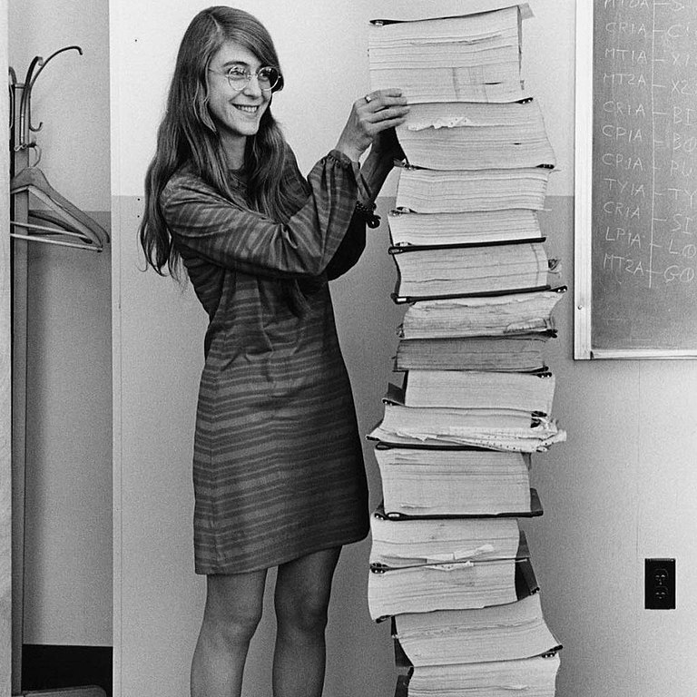
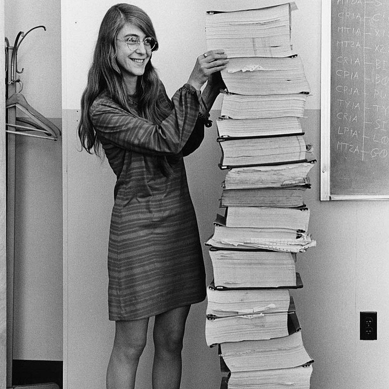
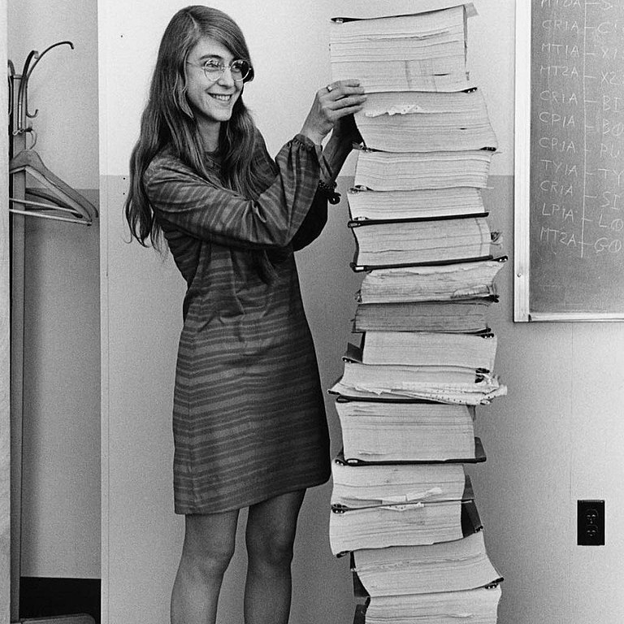

Over the years there have been many amazing women who have worked with code, some being pioneers in their fields, but all of them being icons in their own right.
Here are some of the women I consider the most important in the history of programming.
